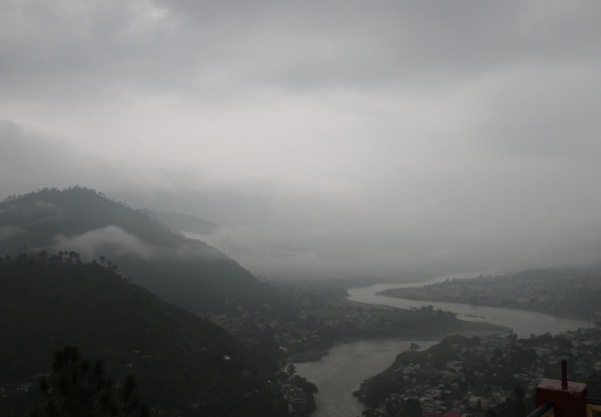

Some of the places to visit in srinagar are as follows

1.Bil kedar
- It is one of the eye catching waterfall that one can encounter on the way from Srinagar to Kirtinagar.
- It is around 3.2 km from main srinagar market.
- Best months to visit this place is around April to mid july.
- After July this places is not safe as water level increases due to monsoon.
- There is no shops and rest room around this place.
- One should be properly prepared before hand so that one can enjoy this place.

2.Ivy top
- It is the most iconic resort that one can find with most fascinating sceneries.
- Ivy Top resort also provide accomodation facility at a resonable price.
- It is the great place to chill with friend as this place is group friendly.
- Couples come upto this resort to spend some quality time with each other.
- If you are tiered form your busy schedule then this is the best place to relax along with your friends and family.
- It is around 2.4 km from main market of srinagar.

3.Ganga Darshan
- It is the one of best view point of Alaknanda river.
- It is approximately 4.2 km from National Institute of Technology, Uttarakhand.
- This place can be easily caught by eye if one is going to Pauri from Srinagar.
- It is a best place to trek along with your friend on week end.
- On the way to this place many view point can be found.